我也有诗和远方，只不过诗很烂，远方也很黑暗
基于python语言的环境配置
1、Python的下载和安装
首先在Python官网下载：http://www.python.org 下载Python安装包，在官网首页找到DownLoads按钮，鼠标悬停在上面时会出现一个下拉菜单，在下拉菜单中根据自己的操作系统选择对应的Python版本。
2、一些必须库的安装以及功能简介
学习机器学习有一些必须要安装的库作为配置的环境。这些库包括：Numpy、Scipy、matplotlib、pandas、IPython以及非常核心的scikit-learn。
Numpy-基础科学计算库
Numpy是一个Python中非常基础的用于进行科学计算的库，它的功能包括高维数组（array）计算、线性代数计算、傅里叶变换以及产生伪随机数等。Numpy对于scikit-learn来说是至关重要，因为scikit-learn使用Numpy数组形式的数据来进行处理，所以需要把数据转化成Numpy数组的形式，而多维数组也是Numpy的核心功能之一。
pip install numpy即可安装Numpy
Scipy-强大的科学计算工具集
Scipy是一个Python中用于进行科学计算的工具集，它有很多的功能，如计算统计学分布、信号处理、计算线性代数方程等。scikit-learn需要使用Scipy来对算法进行执行，其中用的最多的就是Scipy中的sparse函数。sparse函数用来生成稀疏矩阵，而稀疏矩阵用来存储那些大部分数值为0的np数组，这种类型的数组在scikit-learn的实际应用也非常的常见。
pip install scipypands-数据分析的利器
pandas是一个Python中用于进行数据分析的库，它可以生成类似Excel表格式的数据表，而且可以对数据表进行修改操作。pandas还有个强大的功能，它可以从很多不同种类的数据库中提取数据，如SQL数据库、Excel表格甚至CSV文件。pandas还支持在不同的列中使用不同类型的数据，如整型数、浮点数，或是字符串。
pip install pandasmatplotlib-数据可视化利器
matplotlib是一个Python的绘图库，它以各种硬拷贝格式和跨平台的交互式环境生成出版质量级别的图形，它能够输出的图像包括折线图、散点图、直方图等。
pip install matplotlibscikit-learn-非常流行的Python机器学习库
scikit-learn是一个建立在Scipy基础上的用于机器学习的python模块。scikit-learn包含众多定级机器学期算法，它主要有六大类基本功能，分别是：分类、回归、聚类、数据降维、模型选择和数据预处理。
pip install -U scikit-learnK最近邻算法
K最近邻算法的原理，就如成语中所说的“近朱者赤，近墨者黑”。
1、原理
K最近邻算法的原理在分类中有很多种的应用场景：
- 新的数据点离谁近，就和谁属于同一类。当将K选为1时候表示，就会有很高的错误率，假设与新数据最近邻算法的数据刚好是误判的，就会造成新数据点的判断也是错误的。
- 当将K值选为3的时候，表示要选最近的三个数据点进行分类判别。然后判断这三个数据点中的分类情况，如果A类多，表示新数据点分为A类，如果是B类占比多，表示新数据点分为B类。
在scikit-learn中，K最近邻算法的K值是通过n_neighbors 参数来调节的。
K最近邻算法也可以用于回归，原理和其用于分类是相同的。当使用K最近邻回归计算某个数据点的预测值的时，模型会选择离该数据点最近的若干个训练数据集中的点，并且将它们的y值取平均值，并把该平均值作为新数据点的预测值。
2、K最近邻算法的用法
K最近邻算法在分类任务中的应用
scikit-learn中，内置了若干个玩具数据集（Toys Datasets），还有一些API可以自动生成一些数据集。
# 导入数据集生成器
from sklearn.datasets import make_blobs
# 导入KNN分类器
from sklearn.neighbors import KNeighborsClassifier
# 导入画图工具
import matplotlib.pyplot as plt
# 导入数据集拆分工具
from sklearn.model_selection import train_test_split
import numpy as np
# 生成样本数为200，分类为2的数据集
data = make_blobs(n_samples=200, centers=2, random_state=8)
x, y = data
# 将生成的数据集进行可视化
plt.scatter(x[:, 0], x[:, 1], c=y, cmap=plt.cm.get_cmap("Paired"), edgecolors=None, alpha=0.8)
plt.savefig("F:\\StudyNote\\image\\KNN.jpg")
plt.show()具体的显示情况如下：
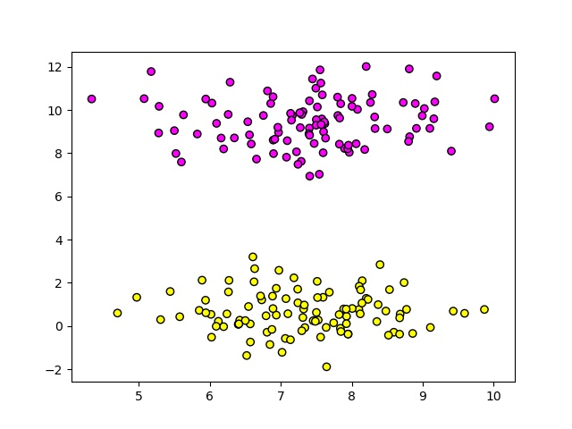
make_blobs(n_sample=200,centers=2,random_state=8)
==n_sample==：表示数据样本点个数，默认值100；
==n_features==: 表示数据的维度，默认值是2；
==centers==：产生数据的中心店，默认值是3；
==cluster_std==：数据集的标准差，浮点数或者浮点数序列，默认1.0；
==center_box==：中心确定之后的数据边界，默认值（-10.0，10.0）；
==shuffle==：洗乱，默认值是true；
==random_state==：随机生成器的种子；
plt.scatter(x=x[0,:],y=x[:,1],c=y,camp=plt.cm.get_cmap(‘spring’),edgecolors=’k’,alpha=0.8)
==x,y==表示的输入数据；c表示色彩或者颜色序列，可选默认；
==marker==表示点的形状，可选，默认为‘o’；
==cmap==表示Colormap，可选，默认为None；
==alpha==表示数据的亮度，可选范围是0-1；
==lindwidths==表示线条的宽度。
以上产生的数据可以看做是机器学习的训练数据集，是已知数据。就是基于这些数据用算法进行模型的训练，然后再对新的未知数据进行分类或者回归。
在上述代码的基础上拟合训练集数据：
clf = KNeighborsClassifier()
clf.fit(x, y)
x_min, x_max = x[:, 0].min() - 1, x[:, 0].max() + 1
y_min, y_max = x[:, 1].min() - 1, x[:, 1].max() + 1
xx, yy = np.meshgrid(np.arange(x_min, x_max, 0.02), np.arange(y_min, y_max, 0.02))
z = clf.predict(np.c_[xx.ravel(), yy.ravel()])
z = z.reshape(xx.shape)
plt.pcolormesh(xx, yy, z, cmap=plt.cm.get_cmap("Pastel1"))
plt.scatter(x[:, 0], x[:, 1], c=y, cmap=plt.cm.get_cmap("spring"), edgecolors='k')
plt.xlim(xx.min(), xx.max())
plt.ylim(yy.min(), yy.max())
plt.title("Classifier:KNN")
plt.show()产生的结果如下图所示：
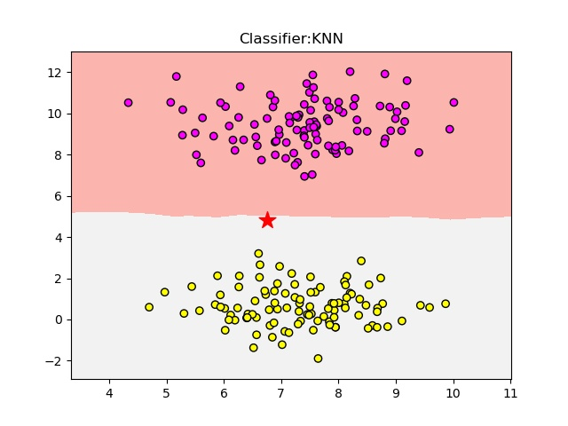
clf = KNeighborsClassifier()
==n_neighbors==：指的是K值的大小，就是在做分类时，选取问题点最近的多少个近邻；
==weights==：在进行分类判断时给最近邻附上的加权，默认的‘uniform’是等权加权，还有‘distance’选项是按照距离的倒数进行加权，也可以使用用户自己定义的其他加权的方法；
==algorithm==：分类时采取的算法，有brute、kd_tree、ball_tree；
==leaf_size==：是Kd_tree或ball_tree生成的树叶的大小；
xx, yy = np.meshgrid(np.arange(x_min, x_max, 0.02), np.arange(y_min, y_max, 0.02)) 用两个坐标轴上的点在平面上画格
plt.pcolormmesh(xx,yy,z,cmap=plt.cm.get_cmp(‘Pastel1’)) 在于能够直观表现出分类边界。
==xx，yy==：表示的是分类的区间的边界
此时如果有新的数据输入的话，就会根据自动将数据分到对应的类中。
在plt.show()前面加上：
plt.scatter(6.75, 4.82, marker='*', c='red', s=200)就是上图的五角星符号，可以看到被分到了浅色区域。
K最近邻算法处理多元分类任务
生成多元分类任务所使用的数据集，为了让难度足够大，修改make_blobs的center参数，把数据类型修改为5个，同时修改n_samples参数，将样本数量增加到500个：
# 导入数据集生成器
from sklearn.datasets import make_blobs
# 导入KNN分类器
from sklearn.neighbors import KNeighborsClassifier
# 导入画图工具
import matplotlib.pyplot as plt
# 导入数据集拆分工具
from sklearn.model_selection import train_test_split
import numpy as np
# 生成样本数为500，分类数为5的数据集
data = make_blobs(n_samples=500, centers=5, random_state=8)
X, y = data
# 用散点图将数据集进行可视化
# plt.scatter(X[:, 0], X[:, 1], c=y, cmap=plt.cm.get_cmap('spring'), edgecolors='k')
clf = KNeighborsClassifier()
clf.fit(X, y)
x_min, x_max = X[:, 0].min() - 1, X[:, 0].max() + 1
y_min, y_max = X[:, 0].min() - 1, X[:, 0].max() + 1
xx, yy = np.meshgrid(np.arange(x_min, x_max, 0.02), np.arange(y_min, y_max, 0.02))
Z = clf.predict(np.c_[xx.ravel(), yy.ravel()])
Z = Z.reshape(xx.shape)
plt.pcolormesh(xx, yy, Z, cmap=plt.cm.get_cmap('Pastel1'))
plt.scatter(X[:, 0], X[:, 1], c=y, cmap=plt.get_cmap('spring'), edgecolors='k')
plt.xlim(xx.min(), xx.max())
plt.ylim(yy.min(), yy.max())
plt.title("Classifier:KNN")
plt.show()其结果如下图所示：
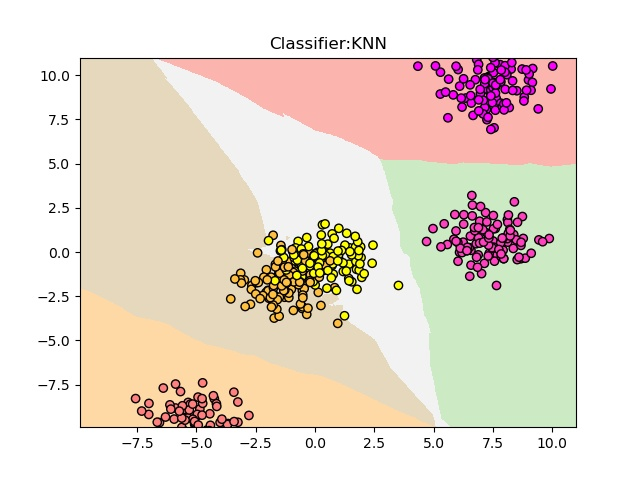
K最近邻算法仍然可以把大部分的数据点放置于正确的分类中，但是有一小部分还是进入了错误的分类中，这些分类错误的数据点基本都是互相重合的位于图像中心点的位置。
模型正确率可以通过clf.score(X,y) 来得到：
print('\n\n\n')
print('代码运行结果：')
print('===================')
print('模型正确率：{:.2f}'.format(clf.score(X, y)))
print('===================')
print('\n\n\n')打印出来的结果如下：
代码运行结果：
===================
模型正确率：0.96
===================K最近邻算法用于回归分析
在scikit-learn的数据集生成器中，有一个非常好的用于回归分析的数据集生成器，make_regression函数。
# 导入数据集生成器
from sklearn.datasets import make_regression
# 导入KNN分类器
from sklearn.neighbors import KNeighborsRegressor
# 导入画图工具
import matplotlib.pyplot as plt
import numpy as np
X, y = make_regression(n_features=1, n_informative=1, noise=50, random_state=8)
reg = KNeighborsRegressor()
reg.fit(X, y)
z = np.linspace(-3, 3, 200).reshape(-1, 1)
plt.scatter(X, y, c='red', edgecolors='k')
plt.plot(z, reg.predict(z), c='k', linewidth=3)
plt.title('KNN Regressor')
plt.show()
print('\n')
print('代码运行结果：')
print('===================')
print('模型正确率：{:.2f}'.format(reg.score(X, y)))
print('===================')
print('\n')其结果如下所示：
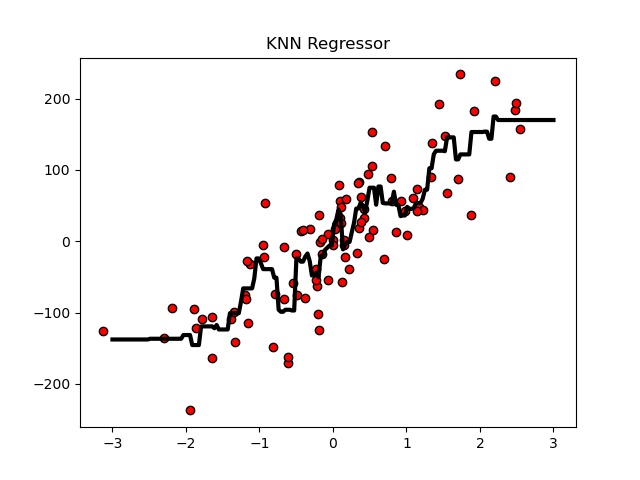
此时模型的准确率只有0.77，有一点差强人意，修改K的数值为1：
reg = KNeighborsRegressor(n_neighbors=2)此时模型的准确率就可以提升到0.86，可以说是显著提升的。
3、红酒预测实例
红酒预测的实例一般分为四个特定的步骤：
- 从Skelearn的dataset模块载入模块
- 将数据集分成训练集和测试集
- 指定KNeighborsClassifier
- 输入新的数据点
- 输出预测的种类
from sklearn.datasets import load_wine
from sklearn.model_selection import train_test_split
from sklearn.neighbors import KNeighborsClassifier
import numpy as np
# 从sklearn的dataset模块载入数据
wine_dataset = load_wine()
# print("红酒数据集中的键：\n{}".format(wine_dataset.keys()))
# print("数据概况：{}".format(wine_dataset['data'].shape))
# print(wine_dataset['DESCR'])
# 将数据集拆分为训练数据集和测试数据集
# 用X表示数据的特征，而用y表示数据对应的标签
X_train, X_test, y_train, y_test = train_test_split(wine_dataset['data'], wine_dataset['target'], random_state=0)
# print('X_train shape:{}'.format(X_train.shape))
# print('X_test shape:{}'.format(X_test.shape))
# print('y_train shape:{}'.format(y_train.shape))
# print('y_test shape:{}'.format(y_test.shape))
# 指定模型n_neighbors参数值为1
knn = KNeighborsClassifier(n_neighbors=1)
knn.fit(X_train, y_train)
# print(knn)
# print("测试数据集得分:{:.2f}".format(knn.score(X_test, y_test)))
# 输入新的数据点
X_new = np.array([[13.2, 2.77, 2.51, 18.5, 96.6, 1.04, 2.55, 0.57, 1.47, 6.2, 1.05, 3.33, 820]])
# 进行预测
prediction = knn.predict(X_new)
print("预测新红酒的分类为：{}".format(wine_dataset['target_names'][prediction]))广义线性模型
线性模型是一类广泛用于机器学习领域的预测模型，线性模型是输入数据集的特征的线性函数建模，并对结果进行预测的方法。
1、基本概念
常用线性模型包括：线性回归、岭回归、套索回归、逻辑回归和线性SVC等
线性回归
import numpy as np
import matplotlib.pyplot as plt
# 导入线性回归模型
from sklearn.linear_model import LinearRegression
# 输入两个点的坐标
X = [[1], [4]]
y = [3, 5]
# 用线性模型拟合这个两个点
lr = LinearRegression().fit(X, y)
# 画出两个点和直线图形
z = np.linspace(0, 5, 20)
plt.scatter(X, y, s=80, c='red')
plt.plot(z, lr.predict(z.reshape(-1, 1)), c='blue')
plt.title('Straight Line')
plt.show()- X和y就像是数据集中的数据，然后经过LinearRegression的拟合得到直线
lr.predict(z.shape(-1,1))。
其结果如下所示：
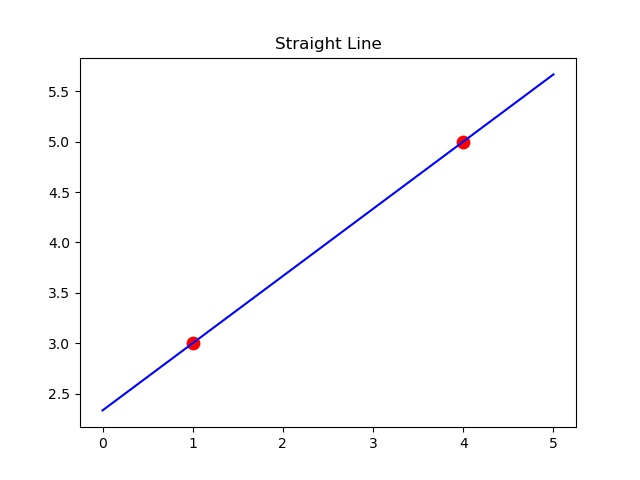
利用print('y={:.3f}'.format(lr.coef_[0]), 'x', '+{:.3f}'.format(lr.intercept_)) 即可打印出出来拟合出来之后的函数：
y=0.667 x +2.333当输入改为三个点的时候：
X = [[1], [4], [3]]
y = [3, 5, 3]此时直线的输出和拟合的情况又有了很大的不同：
y=0.571 x +2.143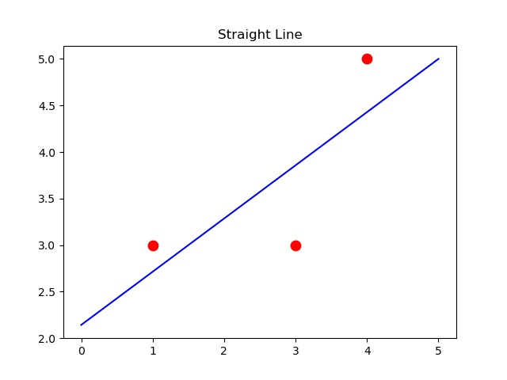
实际应用中数据量远远大于3或者2，以Scikit-learn生成的make_regression数据集作为例子：
import numpy as np
import matplotlib.pyplot as plt
# 导入线性回归模型
from sklearn.linear_model import LinearRegression
from sklearn.datasets import make_regression
# 生成用于回归分析的数据集
X, y = make_regression(n_samples=50, n_features=1, n_informative=1, noise=50, random_state=1)
# 使用线性模型对数据进行拟合
reg = LinearRegression()
reg.fit(X, y)
# scikit-learn总是以下划线作为来自训练集的属性的结尾
print('y={:.3f}'.format(reg.coef_[0]), 'x', '+{:.3f}'.format(reg.intercept_))
# z是生成的等差数列，用来画出线性模型的图形
z = np.linspace(-3, 3, 200).reshape(-1, 1)
plt.scatter(X, y, c='blue', s=60)
plt.plot(z, reg.predict(z), c='k')
plt.title('Linear Regression')
plt.show()它拟合结果为：
y=79.525 x +10.922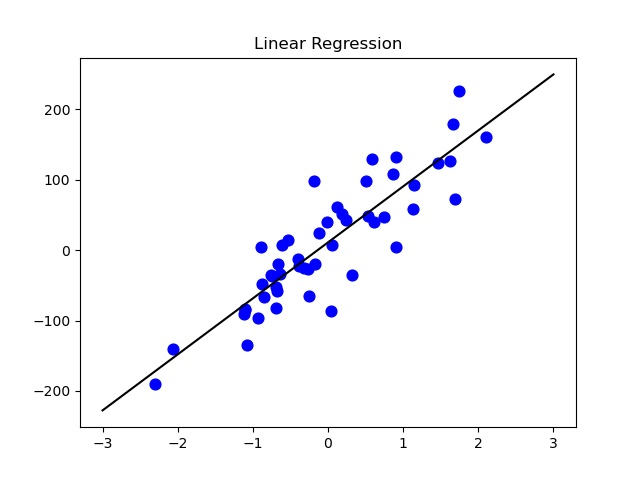
线性模型的特点
用于线性回归分析的线性模型在特征数为1的数据集中，是使用一条直线来进行预测分析的，而当数据的特征数量达到2时，则是一个平面，而对于更多特征数量的数据集来说，则是一个高维度的超平面。
2、最基本的线性模型-线性回归
线性回归是，也称为普通最小二乘法（OLS），是在回归分析中最简单也是最经典的线性模型。
线性回归的最基本原理
线性回归的原理是，找到当训练集中y的预测值和其真实值的平方差最小的时候，所对应的w值和b值。线性回归没有可供用户调节的参数，这就是它的优势。
import numpy as np
import matplotlib.pyplot as plt
# 导入线性回归模型
from sklearn.linear_model import LinearRegression
from sklearn.datasets import make_regression
from sklearn.model_selection import train_test_split
X, y = make_regression(n_samples=100, n_features=2, n_informative=2, random_state=38)
X_train, X_test, y_train, y_test = train_test_split(X, y, random_state=8)
lr = LinearRegression().fit(X_train, y_train)
print("lr.coef_:{}".format(lr.coef_[:]))
print("lr.intercept_:{}".format(lr.intercept_))此时它的w值和d的值为：
lr.coef_:[70.38592453 7.43213621]
lr.intercept_:-1.4210854715202004e-14所以此时拟合的函数为：y=70.3859*X1+7.4321*X2-1.42e^-14
此时因为数据集没有添加噪声所以训练集和测试集的得分都是1。
3、使用L2正则化的线性模型-岭回归
岭回归是一种能够避免过拟合的线性模型。在岭回归中，模型会保留所有的特征变量，但是会减小特征变量的系数值，让特征变量对预测结果的影响变小，在岭回归中是通过改变其alpha参数来控制减小特征变量系数的程度。
import numpy as np
import matplotlib.pyplot as plt
# 导入L2回归模型
from sklearn.linear_model import Ridge
from sklearn.linear_model import LinearRegression
from sklearn.datasets import load_diabetes
from sklearn.model_selection import train_test_split
X, y = load_diabetes().data, load_diabetes().target
X_train, X_test, y_train, y_test = train_test_split(X, y, random_state=8)
lr = LinearRegression().fit(X_train, y_train)
print("线性回归训练集得分：{:.3f}".format(lr.score(X_train, y_train)))
print("线性回归测试集得分：{:.3f}".format(lr.score(X_test, y_test)))
ridge = Ridge().fit(X_train, y_train)
ridge10 = Ridge(alpha=10).fit(X_train, y_train)
ridge01 = Ridge(alpha=0.1).fit(X_train, y_train)
print("岭回归训练集得分：{:.3f}".format(ridge.score(X_train, y_train)))
print("岭回归测试集得分：{:.3f}".format(ridge.score(X_test, y_test)))
# 绘制alpha=1时的模型系数
plt.plot(ridge.coef_, 's', label='Ridge alpha=1')
# 绘制alpha=10时的模型系数
plt.plot(ridge10.coef_, 's', label='Ridge alpha=10')
# 绘制alpha=0.1时的模型系数
plt.plot(ridge01.coef_, 's', label='Ridge alpha=0.1')
# 绘制线性回归的系数做对比
plt.plot(lr.coef_, 'o', label="Linear regression")
plt.xlabel("cofficient index")
plt.ylabel("cofficient magnitude")
plt.hlines(0, 0, len(lr.coef_))
plt.legend()
plt.show()上述包含了alpha函数对岭回归的影响以及与线性回归的对比：
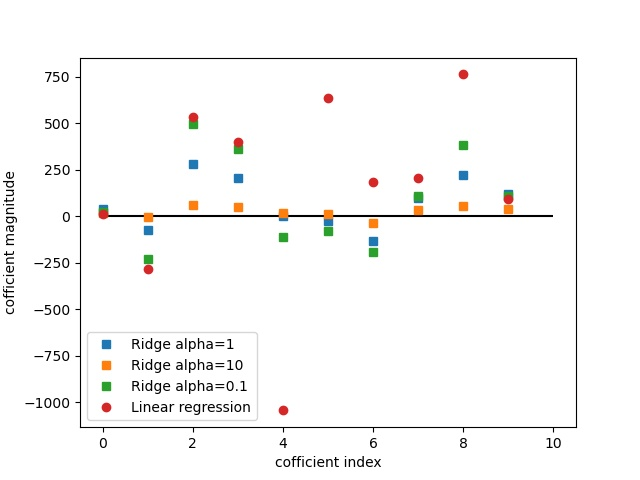
- 横轴表示是特征变量的序号：X=0表示的是第一个特征变量，y轴表示的是对应特征变量的数量。
- 可以看出来，当alpha=10的时候，橙色的点都在y=0附近；当alpha=1的时候，y值的浮动范围有很大的增加；当alpha=0.1时，可以看到岭回归的系数和线性回归的系数非常接近。
4、使用L1正则化的线性模型-套索回归
与岭回归不同的是套索回归，有一部分特征的系数会正好等于0，也就是说，有一些特征会彻底被模型忽略掉，也可以看成是模型对于特征 进行自动选择的一种方式。
import numpy as np
import matplotlib.pyplot as plt
# 导入L2回归模型
from sklearn.linear_model import Ridge
from sklearn.linear_model import LinearRegression
from sklearn.linear_model import Lasso
from sklearn.datasets import load_diabetes
from sklearn.model_selection import train_test_split
X, y = load_diabetes().data, load_diabetes().target
X_train, X_test, y_train, y_test = train_test_split(X, y, random_state=8)
lasso = Lasso().fit(X_train, y_train)
print("套索回归在训练集的得分：{:.2f}".format(lasso.score(X_train, y_train)))
print("套索回归在测试集的得分：{:.2f}".format(lasso.score(X_test, y_test)))
print("套索回归使用的特征数量：{}".format(np.sum(lasso.coef_ != 0)))此时输出为：
套索回归在训练集的得分：0.36
套索回归在测试集的得分：0.37
套索回归使用的特征数量：3套索回归在训练集和数据集的得分都非常糟糕。在10个特征数量中，也仅仅使用了3个。
在套索回归中，依旧可以使用alpha参数来调节，将alpha参数设置为0.1时:
lasso = Lasso(alpha=0.1, max_iter=10000).fit(X_train, y_train)
==================================================
套索回归在训练集的得分：0.52
套索回归在测试集的得分：0.48
套索回归使用的特征数量：7此时套索回归有了更好的表现。
朴素贝叶斯算法
朴素贝叶斯是经典的机器算法之一，也是为数不多的基于概率的算法。
1、基本概念
贝叶斯分类是一类算法的总称，这类算法均以贝叶斯定理为基础，所以统称为贝叶斯分类，而朴素贝叶斯是贝叶斯分类中最简单的，也是最常见的一种方法。
假设在过去的7天当中，有3天下雨，4天没有下雨。用0代表没有下雨，用1代表下雨了，而在这7天当中还有一些，包括刮北风、闷热、多云，以及天气预报给出的信息：
| 刮北风 | 闷热 | 多云 | 天气预报有雨 | 实际是否下雨 | |
|---|---|---|---|---|---|
| 第一天 | 否 | 是 | 否 | 是 | 否 |
| 第二天 | 是 | 是 | 是 | 否 | 是 |
| 第三天 | 否 | 是 | 是 | 否 | 是 |
| 第四天 | 否 | 否 | 否 | 是 | 否 |
| 第五天 | 否 | 是 | 是 | 否 | 是 |
| 第六天 | 否 | 是 | 否 | 是 | 否 |
| 第七天 | 是 | 否 | 否 | 是 | 否 |
用0表示否，用1表示是，可以将实际是否下雨抽象为一个数组：
# 实际下雨情况
y=[0,1,1,0,1,0,0]
# 其他特征情况
X=[[0, 1, 0, 1],
[1, 1, 1, 0],
[0, 1, 1, 0],
[0, 0, 0, 1],
[0, 1, 1, 0],
[0, 1, 0, 1],
[1, 0, 0, 1]]那么对于朴素贝叶斯来说，它会根据上面的情况进行推理。假设现在有一天，没有刮北风，也不闷热，但是多云，天气预报也没有雨，经过贝叶斯预测结果为：
import numpy as np
from sklearn.naive_bayes import BernoulliNB
X = np.array([[0, 1, 0, 1],
[1, 1, 1, 0],
[0, 1, 1, 0],
[0, 0, 0, 1],
[0, 1, 1, 0],
[0, 1, 0, 1],
[1, 0, 0, 1]])
y = np.array([0, 1, 1, 0, 1, 0, 0])
# 对不同的分类计算每个特征为1的数量
counts = {}
for label in np.unique(y):
counts[label] = X[y == label].sum(axis=0)
# print("feature counts:\n{}".format(counts))
# 使用贝努力贝叶斯拟合数据
clf = BernoulliNB()
clf.fit(X, y)
# 要进行预测的这一天，没有刮北风，也不闷热
# 但是多云，天气预报说没有雨
Next_Day = [[0, 0, 1, 0]]
pre = clf.predict(Next_Day)
if pre == [1]:
print("要下雨了，快收衣服呀！")
else:
print("放心，这又是一个艳阳高照的晴天！")此时预测的结果为：
要下雨了，快收衣服呀！通过print(clf.predict_proba(Another_Day))可以得到当天预测下雨和不下雨的概率：
[[0.13848881 0.86151119]]#第一项是不下雨的概率，第二项是下雨的概率2、朴素贝叶斯算法的不同方法
朴素贝叶斯算法包含多种方法，在scikit-learn中，朴素贝叶斯有三种方法：贝努力朴素贝叶斯、高斯贝叶斯、多项式朴素贝叶斯。
贝努力朴素贝叶斯
这种方法比较适用于符合贝努力分布的数据集，贝努力分布也被称之为“二项分布”和“0-1分布”。
当特征数据增加，数据变得复杂的时候，贝叶斯的处理就显得捉襟见肘：
# 导入数据集生成工具
from sklearn.datasets import make_blobs
# 导入数据集拆分工具
from sklearn.model_selection import train_test_split
# 导入贝努力贝叶斯拟合工具
from sklearn.naive_bayes import BernoulliNB
# 导入画图工具
import matplotlib.pyplot as plt
import numpy as np
# 生成样本数量为500，分类数为5的数据集
X, y = make_blobs(n_samples=500, centers=5, random_state=8)
# 将数据拆分为训练集和测试集
X_train, X_test, y_train, y_test = train_test_split(X, y, random_state=8)
# 使用贝努力贝叶斯拟合数据
nb = BernoulliNB()
nb.fit(X_train, y_train)
# print("模型得分：{:.3f}".format(nb.score(X_test, y_test)))
x_min, x_max = X[:, 0].min() - 0.5, X[:, 0].max() + 0.5
y_min, y_max = X[:, 1].min() - 0.5, X[:, 0].max() + 0.5
xx, yy = np.meshgrid(np.arange(x_min, x_max, 0.02), np.arange(y_min, y_max, 0.02))
z = nb.predict(np.c_[(xx.ravel(), yy.ravel())]).reshape(xx.shape)
plt.pcolormesh(xx, yy, z, cmap=plt.cm.get_cmap("Pastel1"))
plt.scatter(X_train[:, 0], X_train[:, 1], c=y_train, cmap=plt.cm.get_cmap("cool"), edgecolors='k')
plt.scatter(X_test[:, 0], X_test[:, 1], c=y_test, cmap=plt.cm.get_cmap("cool"), marker='*', edgecolors='k')
plt.xlim(xx.min(), xx.max())
plt.ylim(yy.min(), yy.max())
plt.title("Classifier: BernoulliNB")
plt.show()其结果如下：
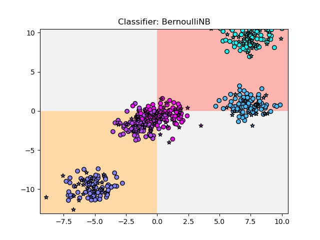
贝努力贝叶斯的模型十分的简单，它分别在纵轴等于0和横轴等于0的位置画两条直线，当使用贝叶斯的默认参数binarize=0.0时，模型对于数据的判断是：如果特征1大于或等于0，且特征2大于或等于0，则将数据归为一类；如果特征1小于且特征2也小于0，则归为另一类，其余的数据则分为第三类。
高斯朴素贝叶斯
假设样本数据符合高斯分布，或者说符合正态分布时所用的算法。
# 导入数据集生成工具
from sklearn.datasets import make_blobs
# 导入数据集拆分工具
from sklearn.model_selection import train_test_split
# 导入高斯贝叶斯拟合工具
from sklearn.naive_bayes import GaussianNB
# 导入画图工具
import matplotlib.pyplot as plt
import numpy as np
# 导入高斯拟合工具
# 生成样本数量为500，分类数为5的数据集
X, y = make_blobs(n_samples=500, centers=5, random_state=8)
# 将数据拆分为训练集和测试集
X_train, X_test, y_train, y_test = train_test_split(X, y, random_state=8)
gnb = GaussianNB()
gnb.fit(X_train, y_train)
print("模型得分：{:.3f}".format(gnb.score(X_test, y_test)))得到的分数是：模型得分：0.968 ，这说明手工数据集的特征基本上符合正态分布的情况。
此时高斯朴素贝叶斯的工作流程就是：
x_min, x_max = X[:, 0].min() - 0.5, X[:, 0].max() + 0.5
y_min, y_max = X[:, 1].min() - 0.5, X[:, 0].max() + 0.5
xx, yy = np.meshgrid(np.arange(x_min, x_max, 0.02), np.arange(y_min, y_max, 0.02))
z = gnb.predict(np.c_[(xx.ravel(), yy.ravel())]).reshape(xx.shape)
plt.pcolormesh(xx, yy, z, cmap=plt.cm.get_cmap("Pastel1"))
plt.scatter(X_train[:, 0], X_train[:, 1], c=y_train, cmap=plt.cm.get_cmap("cool"), edgecolors='k')
plt.scatter(X_test[:, 0], X_test[:, 1], c=y_test, cmap=plt.cm.get_cmap("cool"), marker='*')
plt.xlim(xx.min(), xx.max())
plt.ylim(yy.min(), yy.max())
plt.title("Classifier: GaussianNB")
plt.show()此时结果如下：
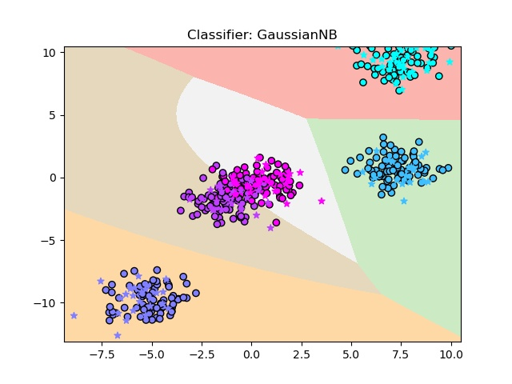
可见高斯贝叶斯的边界比朴素贝叶斯的边界要复杂的多。
多项式朴素贝叶斯
拟合多项式分布的数据集。
# 导入数据集生成工具
from sklearn.datasets import make_blobs
# 导入数据集拆分工具
from sklearn.model_selection import train_test_split
# 导入画图工具
import matplotlib.pyplot as plt
import numpy as np
from sklearn.naive_bayes import MultinomialNB
from sklearn.preprocessing import MinMaxScaler
# 生成样本数量为500，分类数为5的数据集
X, y = make_blobs(n_samples=500, centers=5, random_state=8)
# 将数据拆分为训练集和测试集
X_train, X_test, y_train, y_test = train_test_split(X, y, random_state=8)
scaler = MinMaxScaler()
scaler.fit(X_train)
X_train_scaled = scaler.transform(X_train)
X_test_scaled = scaler.transform(X_test)
mnb = MultinomialNB()
mnb.fit(X_train_scaled, y_train)
print("模型得分结果：{:.3f}".format(mnb.score(X_test_scaled, y_test)))利用多项式对该数据集进行拟合的时候会发现拟合的效果并不好，模型的得分只有0.32.
# 生成样本数量为500，分类数为5的数据集
X, y = make_blobs(n_samples=500, centers=5, random_state=8)
# 将数据拆分为训练集和测试集
X_train, X_test, y_train, y_test = train_test_split(X, y, random_state=8)
scaler = MinMaxScaler()
scaler.fit(X_train)
X_train_scaled = scaler.transform(X_train)
X_test_scaled = scaler.transform(X_test)
mnb = MultinomialNB()
mnb.fit(X_train_scaled, y_train)
print("模型得分结果：{:.3f}".format(mnb.score(X_test_scaled, y_test)))
x_min, x_max = X[:, 0].min() - 0.5, X[:, 0].max() + 0.5
y_min, y_max = X[:, 1].min() - 0.5, X[:, 0].max() + 0.5
xx, yy = np.meshgrid(np.arange(x_min, x_max, 0.02), np.arange(y_min, y_max, 0.02))
z = mnb.predict(np.c_[(xx.ravel(), yy.ravel())]).reshape(xx.shape)
plt.pcolormesh(xx, yy, z, cmap=plt.cm.get_cmap("Pastel1"))
plt.scatter(X_train[:, 0], X_train[:, 1], c=y_train, cmap=plt.cm.get_cmap("cool"), edgecolors='k')
plt.scatter(X_test[:, 0], X_test[:, 1], c=y_test, cmap=plt.cm.get_cmap("cool"), marker="*")
plt.xlim(xx.min(), xx.max())
plt.ylim(yy.min(), yy.max())
plt.title("MultinomiaNB")
plt.show()绘制出多项式朴素贝叶斯的拟合边界：
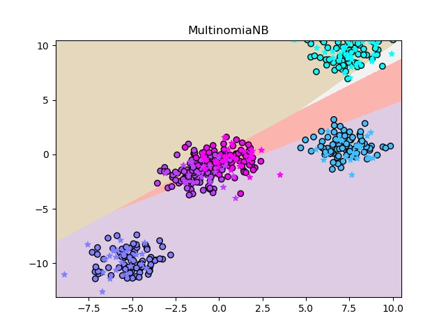
可以看到他将大部分的数据都放入了错误的分类中。